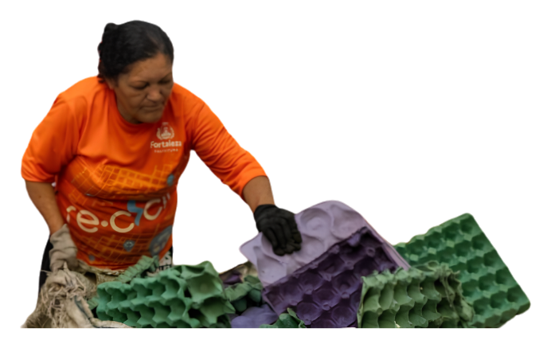
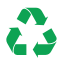

Peso médio carregado por viagem no carrinho, empurrado manualmente em ruas sem infraestrutura.
CATADORES DO BRASIL
Conexões que
transformam
realidades.
Todos os dias, antes mesmo de a cidade despertar, milhares de catadores de materiais recicláveis já estão nas ruas. Empurrando carrinhos e percorrendo longas distâncias, eles desempenham um papel essencial para a reciclagem no Brasil, embora sua atuação ainda seja pouco reconhecida pela sociedade.

UMA INICIATIVA DA UFC

800 milCATADORES NO PAÍS
90%SEM PROTEÇÃO SOCIAL

R$ 15 biGERADOS À CADEIA PRODUTIVA
ROLE PARA DESCOBRIR
QUEM SÃO OS CATADORES?
Invisíveis
na cidade,
essenciais ao
planeta.
Os catadores de materiais recicláveis desempenham uma função indispensável para a sociedade. São eles os responsáveis por coletar, separar e encaminhar para a reciclagem grande parte dos resíduos que seriam descartados em aterros sanitários ou deixados nas ruas. Seu trabalho contribui diretamente para a preservação do meio ambiente, para a redução da poluição e para o fortalecimento da economia circular.
No Brasil, milhares de famílias encontram na catação sua principal fonte de renda. Apesar da relevância de sua atuação, os catadores ainda enfrentam desafios como a baixa remuneração, a informalidade e a falta de reconhecimento social. Reconhecer sua importância significa compreender que a sustentabilidade das cidades depende também do trabalho dessas pessoas.
CATADORA EM ROTA DE COLETA
“A gente limpa a cidade, mas a cidade não enxerga a gente.”
CATADORA, 50 ANOS — FORTALEZA, CE
A ROTINA DOS CATADORES
Um amanhecer
antes da luz.
Enquanto grande parte da cidade ainda dorme, muitos catadores já iniciaram sua jornada. Equipados apenas com seus carrinhos e a própria força física, eles percorrem longas distâncias em busca de materiais recicláveis que possam ser vendidos posteriormente.
Ao longo do dia, enfrentam o calor, as condições climáticas adversas, o trânsito e os riscos associados ao manuseio inadequado de resíduos. Mesmo diante dessas dificuldades, seguem desempenhando um papel fundamental para a limpeza urbana e para a preservação ambiental.
COLETA NA MADRUGADA
COLETA NA MADRUGADA
IMPACTO DO TRABALHO
O peso de um trabalho invisível.
Os dados apresentados demonstram que a reciclagem brasileira depende diretamente do esforço diário de milhares de trabalhadores que permanecem invisíveis para grande parte da sociedade.
Valor gerado à cadeia produtiva da reciclagem anualmente pelos catadores brasileiros (IPEA, 2023).
Da renda dos catadores pode aumentar com a organização em cooperativas. [texto a confirmar]
Toneladas de resíduos desviadas de aterros por ano, equivalente a 10.000 Maracanãs cheios.
Do material reciclável que chega às indústrias passou pelas mãos de catadores.
HISTÓRIAS E VOZES
Rostos por trás dos carrinhos.
Quando falamos sobre reciclagem, é comum pensar apenas nos resíduos. No entanto, por trás de cada tonelada reciclada existem histórias de vida marcadas pelo esforço, pela superação e pela busca diária por dignidade. Clique para conhecer algumas dessas histórias.
“História Curta”
Texto da história a ser adicionado.
“História Curta”
Texto da história a ser adicionado.
“História Curta”
Texto da história a ser adicionado.
ENTENDA MAIS
O que está por trás da reciclagem
Perguntas frequentes sobre a realidade dos catadores, o valor do seu trabalho e como cada um de nós pode fazer diferença.
Por que catadores ganham tão pouco se a reciclagem vale bilhões?
A cadeia da reciclagem tem muitos intermediários entre o catador e a indústria. O catador, por estar no início e sem poder de barganha, fica com a menor fatia de um mercado bilionário.
Papelão: ~R$ 0,30/kg • Alumínio: ~R$ 4–6/kg • PET: ~R$ 1,50/kg
O que muda quando um catador entra em uma cooperativa?
Com a organização coletiva, catadores ganham poder de negociação, acesso a equipamentos, triagem eficiente e contratos diretos — eliminando intermediários.
Como separar o lixo em casa afeta a renda dos catadores?
[Resposta a confirmar no conteúdo do Figma.]
Qual é o impacto ambiental desse trabalho?
[Resposta a confirmar no conteúdo do Figma.]
TRIAGEM DE MATERIAL
GALPÃO DE COOPERATIVA
13 Mi
De toneladas desviadas de aterros por ano.
Sem os catadores, o colapso dos aterros sanitários brasileiros seria muito mais rápido e a população acabaria pagando por isso.
O QUE VOCÊ PODE FAZER
Cada gesto importa
Ações simples que impactam diretamente a renda e o trabalho de quem coleta.
Separe o lixo seco do orgânico
Lave as embalagens
Achate o papelão
Apoie cooperativas locais
Projetos como a ACCS fazem a diferença.
PROJETO CONEXÃO CATADORES
O trabalho invisível merece ser visto.
Desde 2026, o projeto Conexão Catadores aproxima o meio acadêmico da realidade dos catadores, gerando pesquisa, visibilidade e ação concreta. Porque o que não é visto, não é transformado.
Ao longo deste projeto, buscamos dar visibilidade ao trabalho dos catadores de materiais recicláveis e destacar sua importância para a sustentabilidade das cidades. Esperamos que esta iniciativa incentive uma nova forma de enxergar esses profissionais: como agentes ambientais essenciais para a construção de um futuro mais justo e sustentável.